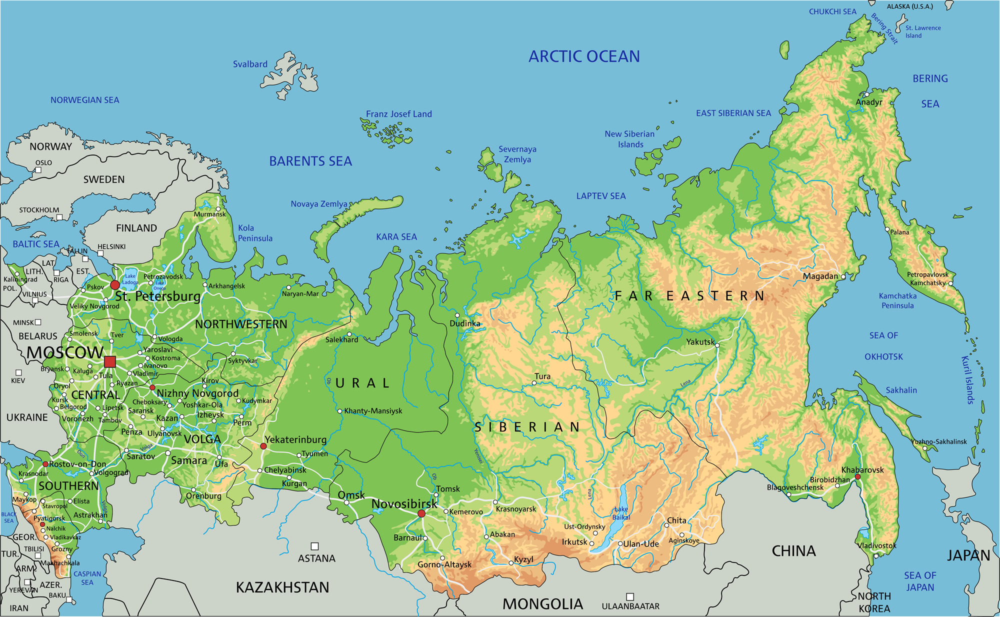
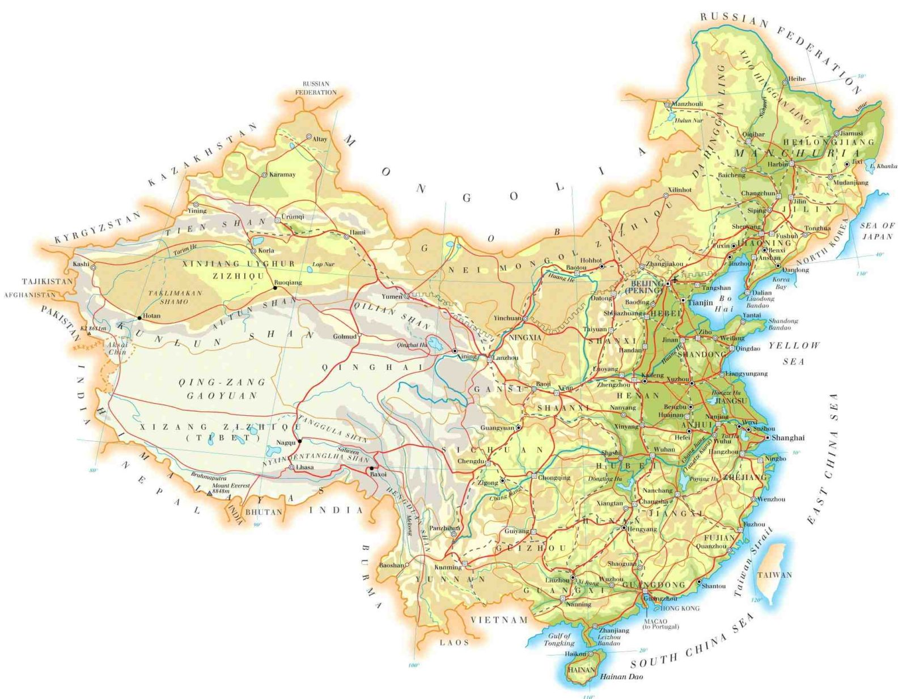
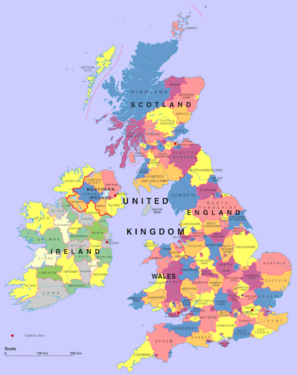
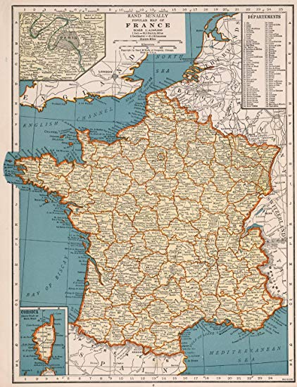

The United States of America (USA), commonly known as the United States (U.S. or US) or simply America, is a country comprising 50 states, a federal district, five major self-governing territories, and various possessions. At 3.8 million square miles (9.8 million km2), the United States is the world's third or fourth largest country by total area and is slightly smaller than the entire continent of Europe. With a population of over 327 million people, the U.S. is the third most populous country. The capital is Washington, D.C., and the most populous city is New York City. Most of the country is located contiguously in North America between Canada and Mexico.
Russia (Russian: Росси́я, tr. Rossiya , IPA: [rɐˈsʲijə]), or the Russian Federation (Russian: Росси́йская Федера́ция, tr. Rossiyskaya Federatsiya , IPA: [rɐˈsʲijskəjə fʲɪdʲɪˈratsɨjə]), is a transcontinental country in Eastern Europe and North Asia. At 17,125,200 square kilometres (6,612,100 sq mi), it is, by a considerable margin, the largest country in the world by area, covering more than one-eighth of the Earth's inhabited land area, and the ninth most populous, with about 146.79 million people as of 2019, including Crimea. About 77% of the population live in the western, European part of the country. Russia's capital, Moscow, is one of the largest cities in the world and the largest city in Europe; other major cities include Saint Petersburg, Novosibirsk, Yekaterinburg and Nizhny Novgorod. Extending across the entirety of Northern Asia and much of Eastern Europe, Russia spans eleven time zones and incorporates a wide range of environments and landforms. From northwest to southeast, Russia shares land borders with Norway, Finland, Estonia, Latvia, Lithuania and Poland (both with Kaliningrad Oblast), Belarus, Ukraine, Georgia, Azerbaijan, Kazakhstan, China, Mongolia and North Korea. It shares maritime borders with Japan by the Sea of Okhotsk and the U.S. state of Alaska across the Bering Strait. However, Russia recognises two more countries that border it, Abkhazia and South Ossetia, both of which are internationally recognized as parts of Georgia.
China (Chinese: 中国; pinyin:Zhongguo ; literally: 'Central State' or 'Middle Kingdom'), officially known as the People's Republic of China (PRC), is a country in East Asia and the world's most populous country, with a population of around 1.404 billion in 2017. Covering approximately 9,600,000 square kilometers (3,700,000 sq mi), it is the third or fourth largest country by total area. Governed by the Communist Party of China, the state exercises jurisdiction over 22 provinces, five autonomous regions, four direct-controlled municipalities (Beijing, Tianjin, Shanghai, and Chongqing), and the special administrative regions of Hong Kong and Macau.
The United Kingdom of Great Britain and Northern Ireland, commonly known as the United Kingdom (U.K. or UK) or Britain, is a sovereign country located off the northwestern coast of the European mainland. The United Kingdom includes the island of Great Britain, the northeastern part of the island of Ireland, and many smaller islands. Northern Ireland is the only part of the United Kingdom that shares a land border with another sovereign state, the Republic of Ireland. Apart from this land border, the United Kingdom is surrounded by the Atlantic Ocean, with the North Sea to the east, the English Channel to the south and the Celtic Sea to the south-west, giving it the 12th-longest coastline in the world. The Irish Sea separates Great Britain and Ireland. The United Kingdom's 242,500 square kilometres (93,600 sq mi) were home to an estimated 66.0 million inhabitants in 2017.
France (French: [fʁɑ̃s], officially the French Republic (French: Republique Francaise, pronounced [ʁepyblik fʁɑ̃sɛːz] (About this soundlisten)), is a country whose territory consists of metropolitan France in Western Europe and several overseas regions and territories. The metropolitan area of France extends from the Mediterranean Sea to the English Channel and the North Sea, and from the Rhine to the Atlantic Ocean. It is bordered by Belgium, Luxembourg and Germany to the northeast, Switzerland and Italy to the east, and Andorra and Spain to the south. The overseas territories include French Guiana in South America and several islands in the Atlantic, Pacific and Indian oceans. The country's 18 integral regions (five of which are situated overseas) span a combined area of 643,801 square kilometres (248,573 sq mi) and a total population of 67.02 million (as of July 2019). France is a unitary semi-presidential republic with its capital in Paris, the country's largest city and main cultural and commercial centre. Other major urban areas include Lyon, Marseille, Toulouse, Bordeaux, Lille and Nice.
hjgfhgfkhgfk